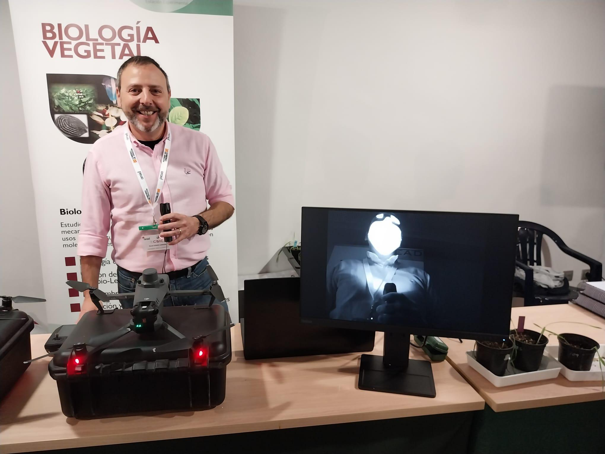
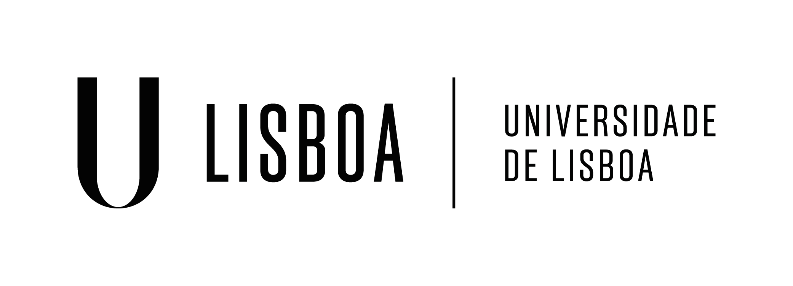
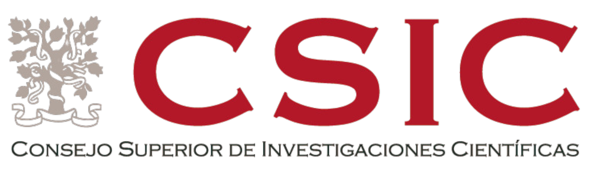
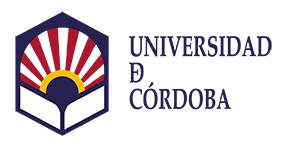

EEAD-CSIC
2024 - ActualidadInvestigador ARAID y responsable del Servicio Científico- Técnico de Teledetección en Agricultura (TeA).

David Gómez Candón desarrolla su actividad investigadora en la Estación Experimental de Aula Dei (EEAD-CSIC), donde lidera proyectos centrados en agricultura de precisión, teledetección, sensores remotos, imágenes RGB, multiespectrales y térmicas, así como fenotipado de cultivos mediante UAV.
Su investigación integra inteligencia artificial, aprendizaje automático y modelos biofísicos para mejorar la monitorización de los cultivos, optimizar el uso del agua y favorecer una agricultura más eficiente y sostenible.
A lo largo de su carrera ha desarrollado actividad investigadora en España, Francia y Portugal, participando en numerosos proyectos internacionales y siendo actualmente responsable del Servicio Científico-Técnico de Teledetección en Agricultura (TeA).
Más de quince años dedicados a la investigación en agricultura digital, teledetección y fenotipado de cultivos, desarrollando soluciones innovadoras junto a algunos de los principales centros de investigación agrícola de Europa.
La carrera científica de David Gómez Candón combina investigación básica y aplicada, desarrollo tecnológico, transferencia del conocimiento y colaboración internacional.
Sus principales líneas de trabajo incluyen agricultura de precisión, drones, sensores RGB, multiespectrales y térmicos, inteligencia artificial y aprendizaje automático para la monitorización del estado fisiológico de los cultivos.
Actualmente desarrolla su actividad como Investigador ARAID en la Estación Experimental de Aula Dei (EEAD-CSIC), donde dirige el Servicio Científico-Técnico de Teledetección en Agricultura (TeA).

Investigación desarrollada en centros de referencia de España, Francia y Portugal.
Investigador ARAID y responsable del Servicio Científico- Técnico de Teledetección en Agricultura (TeA).

Agricultura de precisión, gestión eficiente del agua, fenotipado e imágenes multiespectrales.

Investigación en agricultura digital y análisis avanzado de datos procedentes de sensores remotos.

Estancia científica internacional en ecofisiología vegetal y observación remota.

Investigación postdoctoral en fenotipado, imágenes térmicas y sensores ópticos.

Participación en proyectos europeos de agricultura digital y teledetección.

Desarrollo de la tesis doctoral sobre teledetección y sensores remotos.

Formación académica especializada en agricultura de precisión y producción vegetal.
Principales etapas de la trayectoria investigadora de David Gómez Candón.
Investigador predoctoral y desarrollo de la tesis doctoral sobre teledetección aplicada a cultivos.
Participación en proyectos europeos de agricultura digital y observación remota.
Investigador postdoctoral especializado en fenotipado, sensores e imágenes térmicas.
Estancia científica internacional en ecofisiología vegetal y teledetección.
Investigador INIA-Doc desarrollando proyectos de agricultura de precisión y gestión del agua.
Investigador ARAID y responsable del Servicio Científico-Técnico de Teledetección en Agricultura.
Una trayectoria que combina formación académica, investigación aplicada, desarrollo tecnológico, transferencia del conocimiento y colaboración internacional.
Ingeniero de Montes por la Universidad de Córdoba, Máster en Producción, Protección y Mejora Vegetal y Doctor especializado en agricultura de precisión, sensores remotos y teledetección aplicada.
Agricultura de precisión, teledetección mediante satélites y UAV, imágenes RGB, multiespectrales y térmicas, fenotipado de cultivos, inteligencia artificial y aprendizaje automático.
Dirección de Trabajos Fin de Máster, supervisión de estudiantes, participación en cursos especializados y actividades de divulgación científica.
Responsable del Servicio Científico-Técnico de Teledetección en Agricultura (TeA), impulsando el uso de drones, sensores e inteligencia artificial para la agricultura de precisión.
La actividad científica de David Gómez Candón combina la dirección y participación en proyectos competitivos, publicaciones de impacto internacional y transferencia tecnológica al sector agroalimentario.
Investigador Principal del proyecto MERCEDES y participante en los proyectos MedGreenSOS, ACCWA, MOIST, INVITE y otros programas nacionales e internacionales relacionados con agricultura de precisión, teledetección, gestión eficiente del agua y fenotipado vegetal.
Autor de publicaciones científicas en revistas internacionales de alto impacto sobre sensores remotos, imágenes RGB, multiespectrales y térmicas, inteligencia artificial, agricultura digital y monitorización del estado fisiológico de los cultivos.
Desarrollo de soluciones para el sector agroalimentario mediante drones, satélites, sensores remotos e inteligencia artificial. Responsable del Servicio Científico-Técnico de Teledetección en Agricultura (TeA), impulsando la transferencia del conocimiento a empresas, cooperativas e instituciones.
Una trayectoria científica desarrollada mediante proyectos internacionales, publicaciones de alto impacto y transferencia tecnológica al sector agroalimentario.
Investigador Principal del proyecto MERCEDES y participante en numerosos proyectos europeos y nacionales relacionados con agricultura digital, teledetección y gestión eficiente del agua.
Investigación desarrollada en España, Francia y Portugal mediante colaboraciones con universidades, organismos públicos de investigación y centros tecnológicos europeos.
Autor de publicaciones científicas internacionales, revisor de revistas especializadas y participante habitual en congresos científicos.
Responsable del Servicio Científico-Técnico de Teledetección en Agricultura (TeA), impulsando el uso de drones, sensores e inteligencia artificial en la investigación agronómica.
"La agricultura del futuro dependerá de nuestra capacidad para integrar conocimiento científico, tecnología e innovación al servicio de una producción más eficiente y sostenible."
Puede descargar el currículum vitae completo de David Gómez Candón en formato PDF.
📄 Descargar PDF